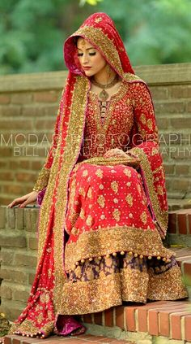

Here in our beautiful bridal couture, we can turn the wedding dress of your dreams into a reality. So, on one of the most important days of your life, you look and feel sensational. Brides-to-be want to look fantastic on their wedding day and, at Paki Couture, we do our utmost to ensure they do. Shop online at Pakicouture.com. We offer the largest range of bridal dresses at reasonable price with an offer of free gifts. We can customize any outfit the way you would like it, including color, stitching, and embroidery.

Wedding day is one of the biggest day of women life. Pakistani Brides are more cautious about their bridal dress because they knows they will be the key personality and she will be spotlight in whole occasion. Pakistani Bridal Wear is the most cultural dresses that needs lots of fine work, embellished with kora, dubka, zardosi, stones, zircon, moti, cut dana, beads, applique, sequence, etc. All embroidery is done from silk thread with double touch to enhance the beauty and emboss the work load. You may see some of the pictures below so that you can make your choice and the dress will be prepared accordingly to your needs and requirement. Else you can also send you own pictures according to your requirement and that will be made exactly as per the style, design and pattern shown in the picture. Be it a Engagement, a Wedding, a Valima or any important festive occasion, shop your entire wedding clothing at AlmasCouture.com
Click here for Home page.